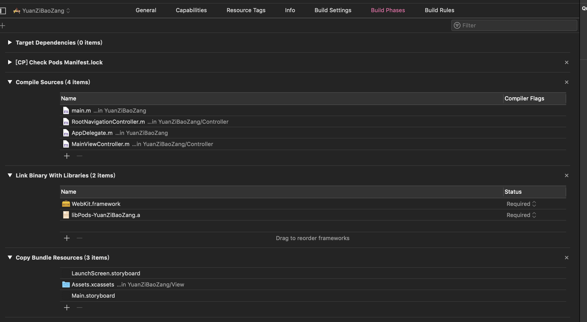

WKWebView对比UIWebView的优势
1.WKWebView的内存开销要比UIWebView小很多
2.拥有高达60FPS滚动刷新率及内置手势
3.支持了更多的HTML5特性
4.html页面和WKWebView交互更方便
5.Safari相同的JavaScript引擎
6.提供常用的属性，如加载网页进度的属性estimatedProgress
基本使用
倒入库

引入头文件
#import <WebKit/WebKit.h>
初始化
1 | @interface MainViewController () <WKNavigationDelegate> |
关于WKWebView的代理
WKNavigationDelegate
1 | #pragma mark - WKNavigationDelegate |
WKUIDelegate
1 | - (nullable WKWebView *)webView:(WKWebView *)webView createWebViewWithConfiguration:(WKWebViewConfiguration *)configuration forNavigationAction:(WKNavigationAction *)navigationAction windowFeatures:(WKWindowFeatures *)windowFeatures; |